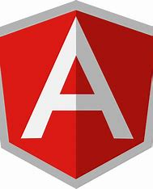

¿Qué es Angular? - Concepto
Angular (comúnmente llamado Angular 2+ o Angular 2) es un framework para aplicaciones web desarrollado en TypeScript, de código abierto, mantenido por Google, que se utiliza para crear y mantener aplicaciones web de una sola página. Su objetivo es aumentar las aplicaciones basadas en navegador con capacidad de Modelo Vista Controlador (MVC), en un esfuerzo para hacer que el desarrollo y las pruebas sean más fáciles.
Fuente de Wikipedia
Proceso de instalación
1. Instalar Node.js y npm:
2. Antes de instalar Angular CLI, asegúrate de tener Node.js y npm instalados en tu máquina de desarrollo. Puedes descargar Node.js desde la página oficial.
3. Instalar Angular CLI:
4. Abre una terminal o línea de comandos.
5. Ejecuta el siguiente comando para instalar Angular CLI a nivel global:
npm install -g @angular/cli
6. Esto instalará la interfaz de línea de comandos de Angular (Angular CLI) en tu sistema.
7. Verificar la instalación:
8. Después de la instalación, verifica si se instaló correctamente ejecutando el siguiente comando:
ng --version
Esto mostrará la versión de Angular CLI y otras dependencias.
PULSE LA IMAGEN PARA COMENZAR LA INSTALACION
